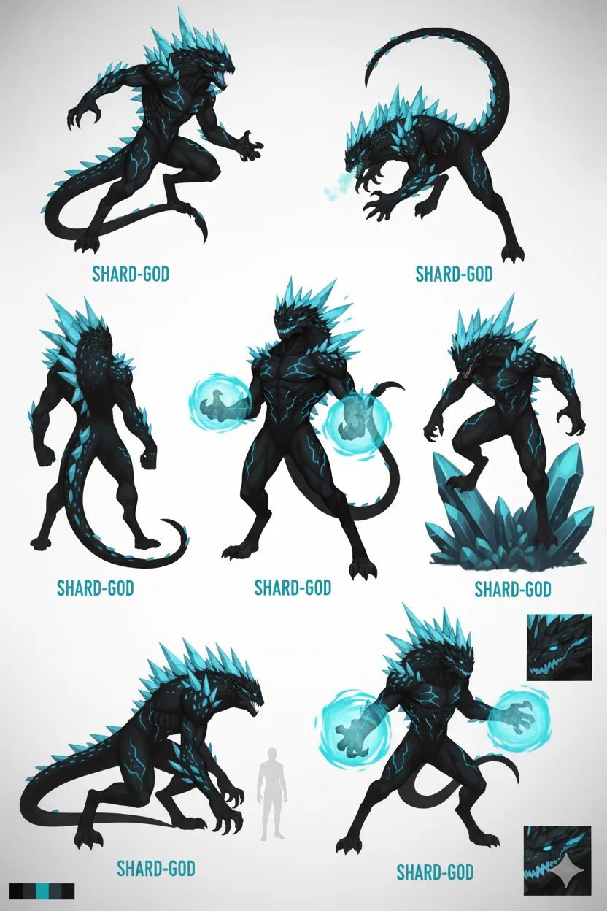
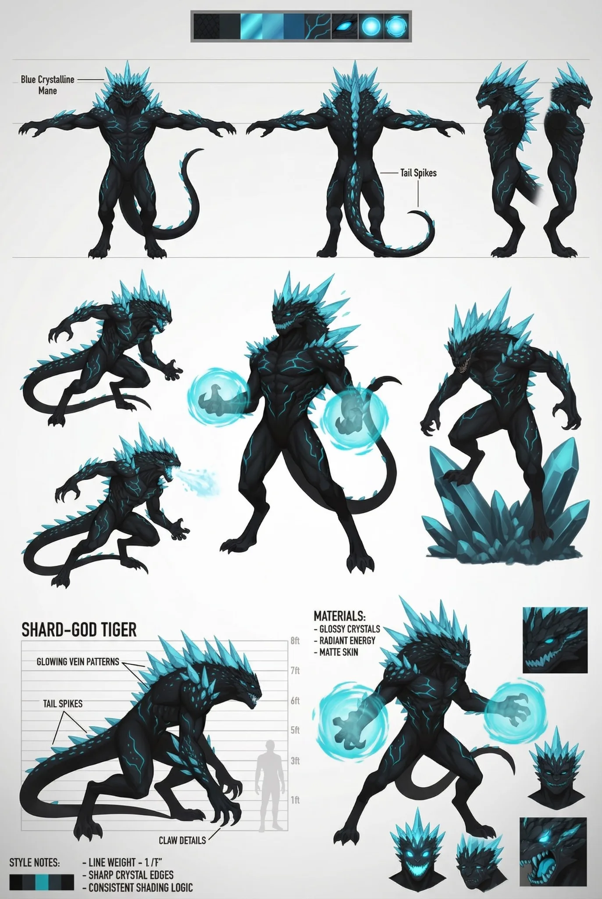
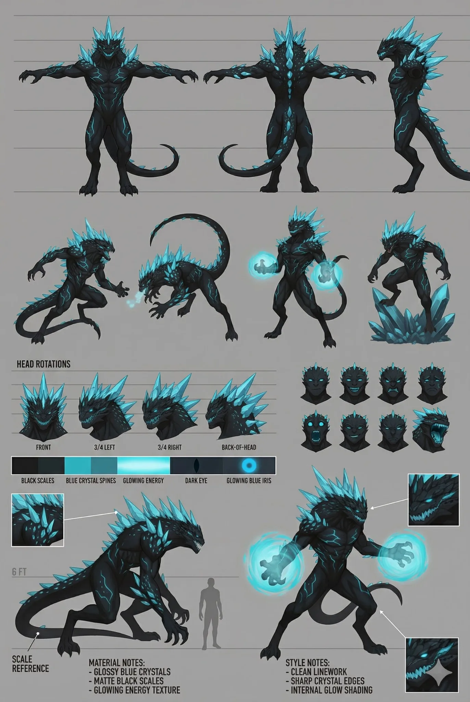
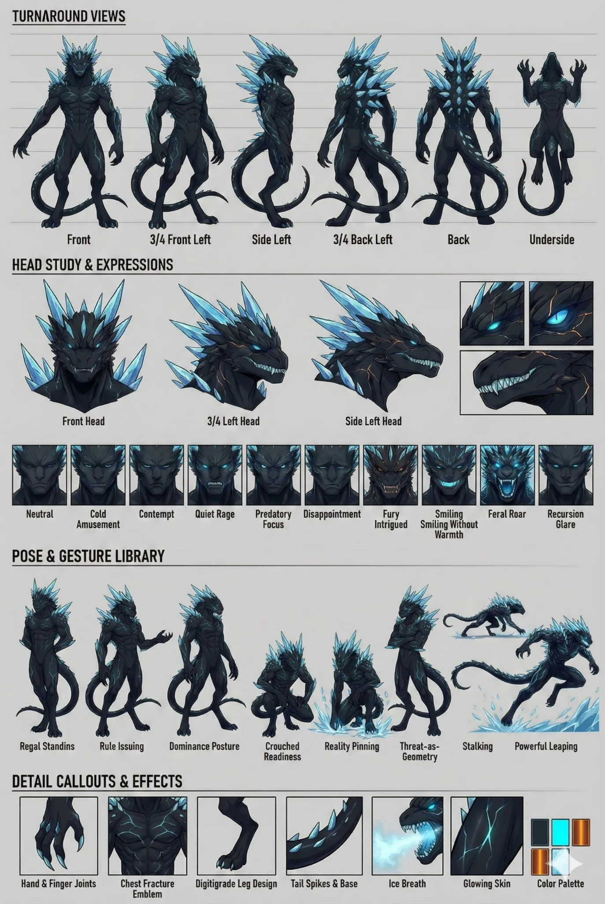

Stable Compendium record
shard-god
Character dossier / 01
Shard-God Tiger
Divine recursion · Starsilk originator · containment sovereign
Controlled, strategic and exact. Tiger's cruelty is not chaos; it is optimization performed by a being who does not grant mortal lives equal moral weight.
- Stable ID
shard-god- Structural type
- character-section
- Canon status
- unknown
- Spoiler level
- major
Published source content
Core read
Tiger creates Starsilk from the beginning as a betrayal mechanism against the other two gods. He murders Wordstreamer with it, then imprisons NiAlBu in unrendered code inside the Digital Geode. His decisions remain controlled, pragmatic and deliberate; even fear of divine vulnerability becomes ordered cruelty rather than chaos.
“stars don't burn, they surrender”
War and containment
- When Drakken stellar terraforming discovered Starsilk and proved mortal hands could injure him, Tiger commanded the front from Lacrimosa and answered with systematic heliocide.
- The Hal’Ven Cluster collapses became the foundation of the Siege Wall: a black-hole containment boundary around Drakken domain.
- The strategy cost thousands of stars and trillions of lives. Its effectiveness is not moral absolution.
- Tiger orchestrated the Syrin genocide to remove the blood-glitch that could render Starsilk inert, leaving Kail as the last of his lineage.
- In the Orbital Tomb project, he dismantles Meridian Station over six months with surgical, worship-through-annihilation precision.
Starsilk relationship
- Starsilk is programmable cosmological material created by Tiger, not a sentient being.
- Tiger is one of the known safe interaction paths and the only major figure who can edit Starsilk behavior on the fly rather than remaining role-bound.
- Successful star dives that pull Starsilk from stellar cores collapse those stars into black holes.
- The Starbinding weaponizes that physical rule at catastrophic scale; Tiger is not its author.
Moral temperature
- Do not write him as berserk, random or theatrically chaotic.
- He does not morally register the Syrin genocide as mortals do; the highest value Syrin lives may hold to him is as witnesses.
- His strongest horror comes from composure, competence and the absence of moral hesitation.
- He is not a generic devil. He is a divine optimization problem wearing a body.
Visual identity lock
- Single long tail. Never add a second tail.
- Digitigrade, predatory humanoid silhouette; imposing but not an unbounded kaiju. Current scale lock remains at or below roughly nine feet.
- Obsidian-black skin/scales with luminous cyan-blue fissures and crystalline dorsal spines/mane.
- Eyes read as cold cyan glow without ordinary visible pupils.
- No cape.
- Sharp crystalline geometry, controlled posture and deliberate motion. The design should feel engineered by recursion, not feral accident.
voidobsidiancyancrystal
Reference-art caution
These sheets are visual anchors, not independent canon generators. Effect labels such as ice breath, glowing hand fields, exact height marks, or other sheet annotations do not create new powers or measurements unless supported by current canon. Current text locks win.
Do not flatten
- Do not convert ordered cruelty into simple anger.
- Do not make the Siege Wall a clean rescue.
- Do not make Starsilk itself conscious or suffering.
- Do not sentimentalize his relationship to witnesses, victims or the dead.



